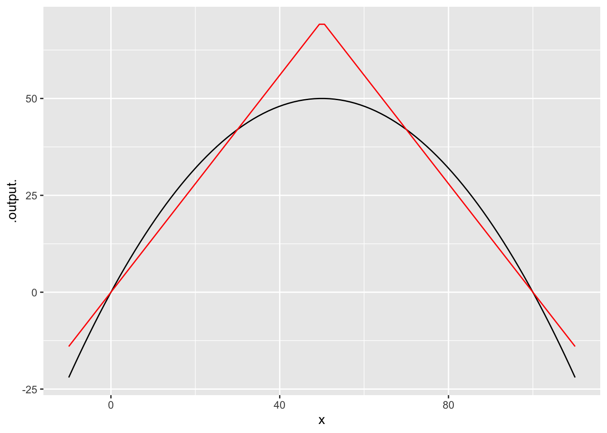

Integrating ODEs in R
Daniel Kaplan
We have suggested a simple model for limited growth: \[\dot{x} = r\,x\,(1-x/K)\] where \(K\) is the “carrying capacity” of the environment in which the growth occurs. Given a graph of the dynamics function (\((x) = r x (1-x)\), you should at this point be able to locate the values \(x^\star\) of any fixed points and determine at a glance whether they are stable.
But sometimes you need more information about how the shape of the solution, that is \(x(t)\) versus \(t\). Currently, we have a formula for the solution of only one form of differential equation: \[\dot{x} = a x \ \ \ \implies \ \ \ x(t) = x(0) e^{a t}\] This is an important solution since it describes all dynamics near fixed points. But what if we are interested in transient behavior far from a fixed point?
A valuable tool is “numerical integration” of differential equations. You’ve see how this works in the app used in DD-19:

In this section, we’ll work to generate solutions in the form of R functions that can be used like any other R function. The central operator is integrateODE(), which, given the dynamical function in \(\dot{x} = \mbox{dynamics}(x)\) an initial condition \(x(0)\), and the numerical values of any parameters, produces the solution.
For example the code in the sandbox generates a solution to \(\dot{x} = a x\). Once we have that solution, we can do the usual things with it: graphing, finding zeros, differentiating, etc.
soln <- integrateODE(dx ~ a * x, a = -1, x = 10, tdur = 10)
slice_plot(soln$x(t) ~ t, domain(t = c(0, 10)))
x_dot <- D(soln$x(t) ~ t)
slice_plot(x_dot(t) ~ t, domain(t = c(0, 10)))
# soln <- integrateODE(dx ~ r * x*(1-x/K),
# r = 2, K=100, x = 10, tdur = 10)
# soln2 <- integrateODE(dx ~ piecewise_fun(x, r, K),
# r = 2, K = 100, x = 10, tdur = 10)
# slice_plot(soln$x(t) ~ t, domain(t=c(0, 10)) ) %>%
# slice_plot(soln2$x(t) ~ t, color='red')As you recall, the standard model for limited growth is \[\dot{x} = r\, x (1-x/K)\] Modify the code in the sandbox to find the solution to this model, using \(K=100\), \(r=1\), and \(x(0) = 10\).
We use the dynamic function \(r\, x (1-x/K)\) because we like to use low-order polynomials as modeling functions. But we could use something else. For example, the piecewise_fun() is a roughly similar shape:
slice_plot(2 * x * (1 - x/100) ~ x, domain(x=c(-10,110))) %>%
slice_plot(piecewise_fun(x, r=2, K=100) ~ x, color="red")
What are the arguments to integrateODE() and what is the result of the integration?
- The dynamical function, written as a tilde expression. But this is a slightly different sort of thing than you’re used to with
makeFun(). InmakeFun()you might writesin(3 * x) ~ xfor the tilde expression. But inintegrateODE()the left-hand side of the tilde expression simply names the variable in the differential equation. Since the variable in this example isx, the left-hand side is the differentialdx. The right-hand side of the tilde expression is, inintegrateODE(), the mathematical formula for the dynamics function written in R notation. - Arguments such as
a = -1, or \(r=1\) or \(K=100\) set numerical values for the parameters in the dynamical function. x = 10orx = 200sets the initial condition.tdur = 10the domain in time for which we want the solution calculated: it will go from \(0 \leq t \leq \mbox{tdur}\). Here, it’s set to a reasonable value for the dynamics being studied.
By rights, the object returned by integrateODE() ought to be the function that solves the differential equation for the given parameters and initial condition. That’s almost the case. But we will use integrateODE() for 2-D and higher-dimensional equations, just as we used it for 1-D equations in this section. Consequently, integrateODE() is arranged to return a list of functions. Each element of that list has a name. In the example here, there is only one element to the list (since the dynamics are 1-dimensional). The name of that element is x. The R expression soln$x refers to that element; soln$x is a function but soln is a list. The $ is one of the ways of referring to a particular element of a list in R.